Appendix A
Baseline comparison & the effect of simulation midtraining
What does large-scale simulation midtraining of WM₁ contribute to the full system?
The three two-stage variants share the same WM₂ renderer and differ only in how WM₁ is trained: (i) real data only, (ii) simulation only (midtraining), and (iii) simulation midtraining then real LoRA fine-tuning (sim+real, ours). We additionally compare against a separately trained, single-stage Ctrl-World RGB baseline. Like WM₁ and WM₂, it's initialized from SVD and LoRA-adapted (rank 16, α=16); unlike them, it's trained end-to-end for 70,000 steps exclusively on the real dataset (≈2.5 h), with no simulation exposure. It predicts RGB directly and uses neither WM₁ nor the WM₂ renderer.
Appearance metrics alone are misleading
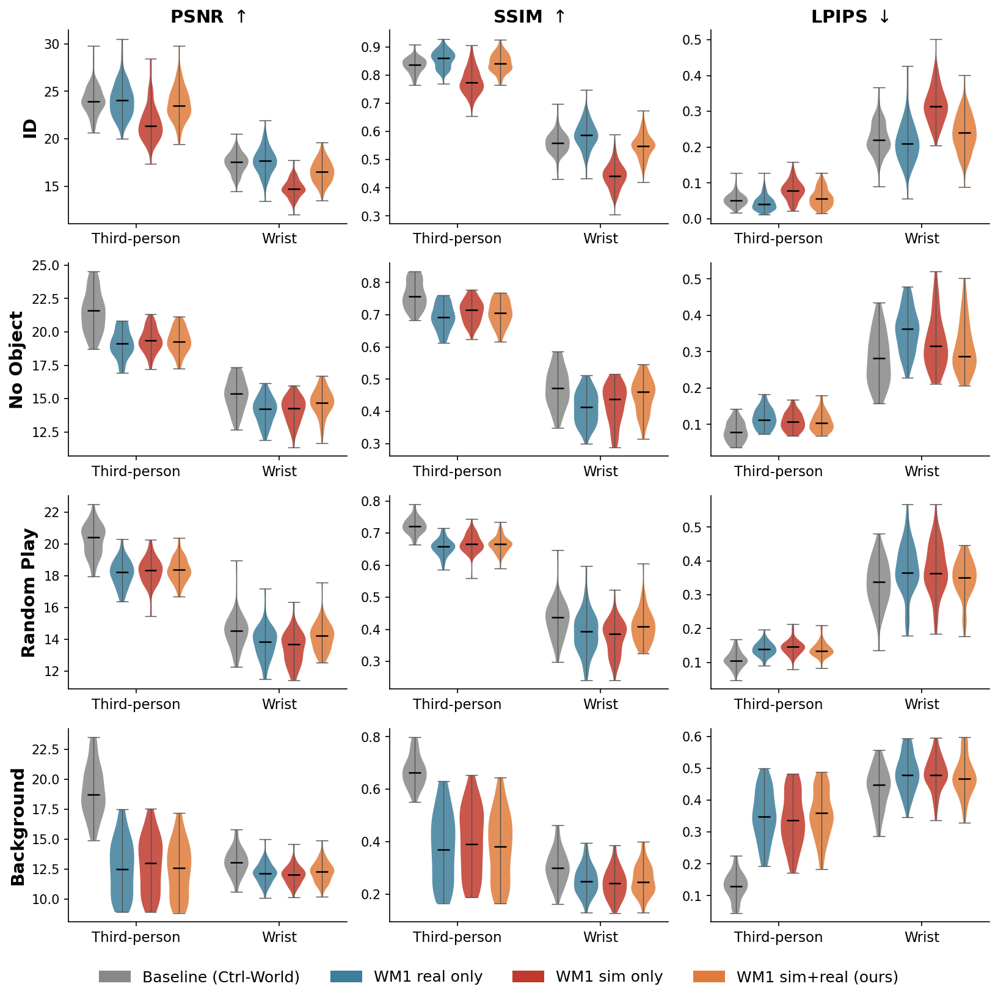
Sharpness exposes the blur
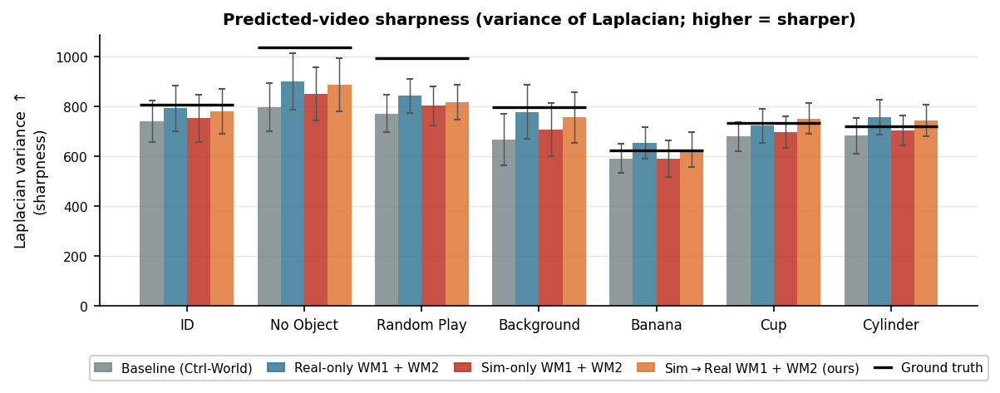
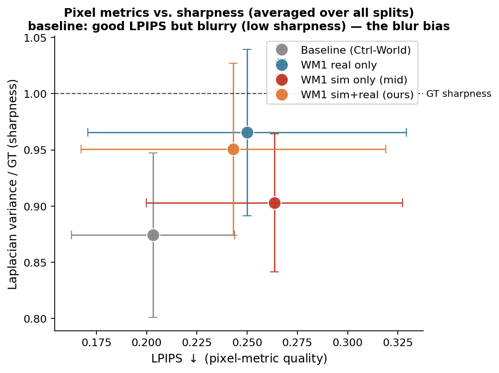
Fréchet Video Distance does not corroborate the OOD advantage
As a complementary check less directly tied to per-pixel reconstruction, we compute Fréchet Video Distance (FVD) between each model's generated rollouts and paired ground-truth clips, using the standard Kinetics-pretrained I3D feature extractor. On ID, Mask2Real-WM is roughly on par with the baseline (95.1 vs. 98.4), though the real-only WM₁ variant scores lowest overall (73.2). On the combined OOD split (n=150, pooling all three OOD conditions), the baseline is in fact the lowest-FVD model (351.0 vs. 386.3 for ours) — the opposite ranking from the controllability and sharpness results. We don't have a confirmed explanation for this reversal; plausible contributors include the sample size (still below the ≥2048 clips recommended for a stable estimate, even pooled) and a domain mismatch between I3D's Kinetics-pretrained features, tuned for holistic human-action recognition, and the fine per-joint articulation our controllability protocol targets. We report this result for completeness rather than because it supports our claims: unlike PSNR/SSIM/LPIPS, sharpness, and controllability, FVD at this sample size does not favor Mask2Real-WM over the baseline.
| Split | Baseline | WM1 real only | WM1 sim only | WM1 sim+real (ours) |
|---|---|---|---|---|
| ID (n=150) | 98.4 | 73.2 | 211.6 | 95.1 |
| OOD, combined (n=150) | 351.0 | 406.2 | 410.2 | 386.3 |
Mask-space quality reveals the generalization benefit
| Split | WM₁ regime | PSNR ↑ | LPIPS ↓ | mIoU ↑ |
|---|---|---|---|---|
| ID | WM1 real only | 22.00 | 0.119 | 0.621 |
| WM1 sim only | 19.03 | 0.229 | 0.361 | |
| WM1 sim+real (ours) | 20.72 | 0.158 | 0.517 | |
| OOD | WM1 real only | 20.48 | 0.147 | 0.488 |
| WM1 sim only | 20.33 | 0.184 | 0.391 | |
| WM1 sim+real (ours) | 21.74 | 0.122 | 0.503 |
Real-only training fits the ID distribution best, but simulation midtraining followed by fine-tuning generalizes best under distribution shift (OOD PSNR 21.7 vs. 20.5), because the synthetic corpus covers contact-rich motions absent from the small real dataset. mIoU (hand and object classes) shows a consistent pattern: sim-only alone trails both other regimes at every split (ID 0.36, OOD 0.39), and sim+real edges out real-only on OOD (0.50 vs. 0.49, a modest margin) despite trailing it substantially on ID (0.52 vs. 0.62). Long-horizon rollouts comparing ours vs. the baseline are shown in Appendix N.
Appendix B
Per-component action controllability
Does the model respond to each action dimension independently?
We drive a single action dimension at a time with a sinusoid (holding the others fixed) and roll the model out for all 23 dimensions: the 6-DoF end-effector pose (dims 0 to 5: x, y, z, roll, pitch, yaw) and the 17 ORCA hand joints (dims 6 to 22). Qualitatively, the model produces a coherent, dimension-specific visual response for the perturbed dimensions, illustrative of command-response controllability rather than a quantitative measure of per-dimension physical fidelity or cross-axis independence.
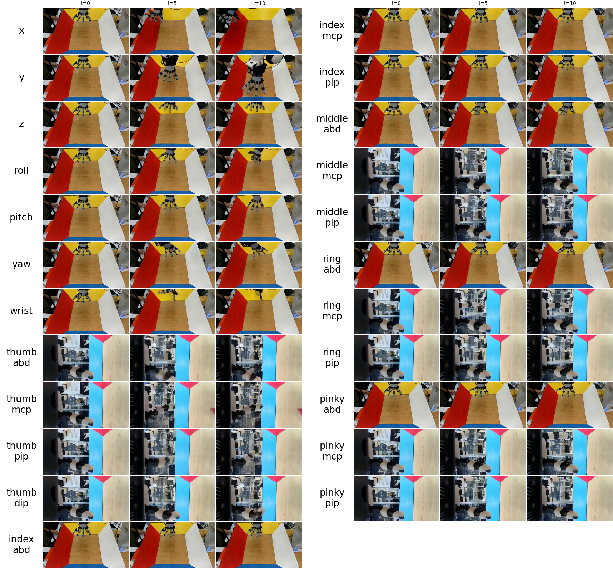
Appendix C
WM₂ conditioning ablation
Ablating WM₂'s two conditioning signals: the ControlNet mask branch and the frame-wise action cross-attention.
Standard pixel metrics (PSNR, SSIM, LPIPS) reward predictions that minimise per-pixel error, biasing them towards blurry, temporally averaged outputs. The actions-only variant therefore appears competitive on these metrics while producing visibly degraded video.
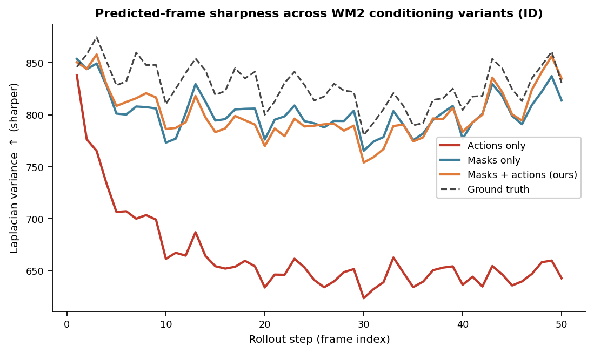
Masks only (no action conditioning) is the primary driver of spatial sharpness and additionally enables zero-shot deployment decoupled from the robot's action space. Masks + actions (ours) yields the best ID pixel metrics and competitive OOD performance while keeping the sharpness gains. The LPIPS summary appears in Appendix M.
Appendix D
Error accumulation in autoregressive rollouts
In autoregressive rollout each predicted frame conditions the next, so small mistakes compound, and WM₁ mask errors propagate into WM₂.
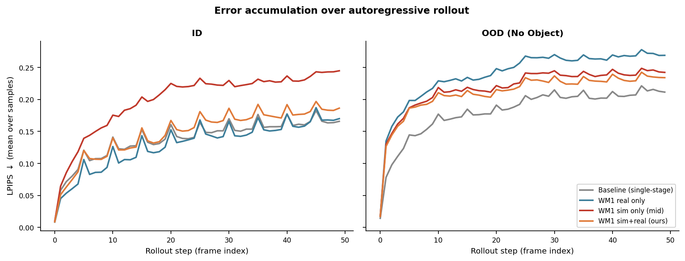
Appendix E
Failure mode examples
The current bottleneck is WM₁'s object-state prediction: it reliably captures hand dynamics but is less certain about the object.
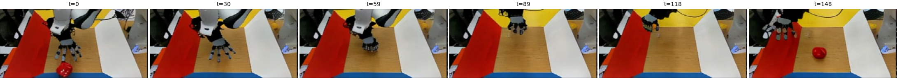
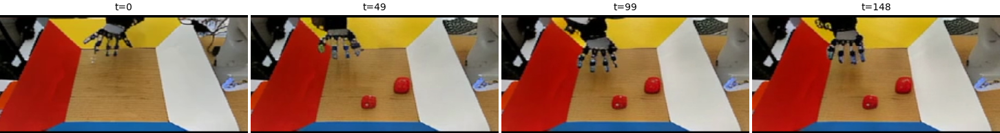
Appendix F
Generalization to objects unseen in real data
The real demos are almost exclusively red-cube manipulation. We evaluate the full pipeline zero-shot on a banana, cup and cylinder: objects WM₁ has seen in simulation but that WM₂ (real-only) has never rendered.
Because WM₁ operates in segmentation space and is largely agnostic to appearance, the dynamics model transfers directly; only WM₂ must render the new appearance.
| Object | Model | PSNR ↑ | SSIM ↑ | LPIPS ↓ |
|---|---|---|---|---|
| Banana | Baseline (Ctrl-World) | 19.40 | 0.613 | 0.202 |
| Mask2Real-WM (appearance) | 17.30 | 0.564 | 0.238 | |
| Mask2Real-WM (WM₁ seg) | 19.76 | 0.860 | 0.201 | |
| Cup | Baseline (Ctrl-World) | 19.01 | 0.618 | 0.200 |
| Mask2Real-WM (appearance) | 16.65 | 0.581 | 0.224 | |
| Mask2Real-WM (WM₁ seg) | 19.48 | 0.867 | 0.180 | |
| Cylinder | Baseline (Ctrl-World) | 19.06 | 0.616 | 0.194 |
| Mask2Real-WM (appearance) | 16.92 | 0.579 | 0.221 | |
| Mask2Real-WM (WM₁ seg) | 19.80 | 0.866 | 0.190 |
The baseline scores higher on per-pixel appearance metrics owing to the blurry-prediction bias, but WM₁ maintains high segmentation-space fidelity (SSIM ≈ 0.86) on these objects. The result is specific to WM₁: the mask dynamics model transfers segmentation dynamics to objects seen in simulation midtraining but absent from real-world training, without retraining the dynamics model, not evidence of superior zero-shot generalization of the full RGB pipeline (which scores worse than the baseline on pixel metrics here). Only WM₂ would need updating to match new textures. Qualitative predictions for each object are shown below.
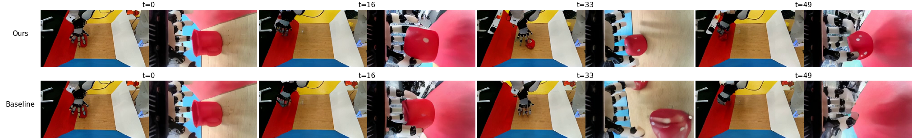
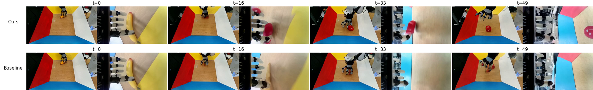
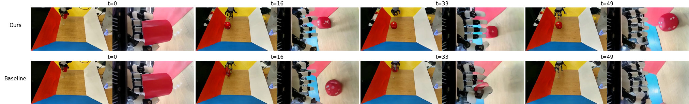
Appendix G
WM₂ conditioned on ground-truth masks
Is WM₁'s mask prediction quality the primary bottleneck? We feed WM₂ oracle SAM 3 masks instead of WM₁'s predictions.

Appendix H
CNN mask encoder vs. VAE encoder for ControlNet
Why a dedicated CNN encoder rather than the SVD VAE encoder to condition ControlNet?
We measure a boundary-response score: the ratio of feature-gradient magnitude at segmentation-class boundaries to that in flat interiors (>1 means boundary-selective features). Across 128 frames the CNN attains 4.41 ± 0.74 vs. 2.98 ± 0.43 for the VAE; class boundaries encoded ≈48% more strongly, on every frame.
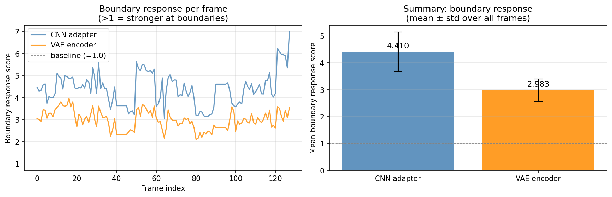
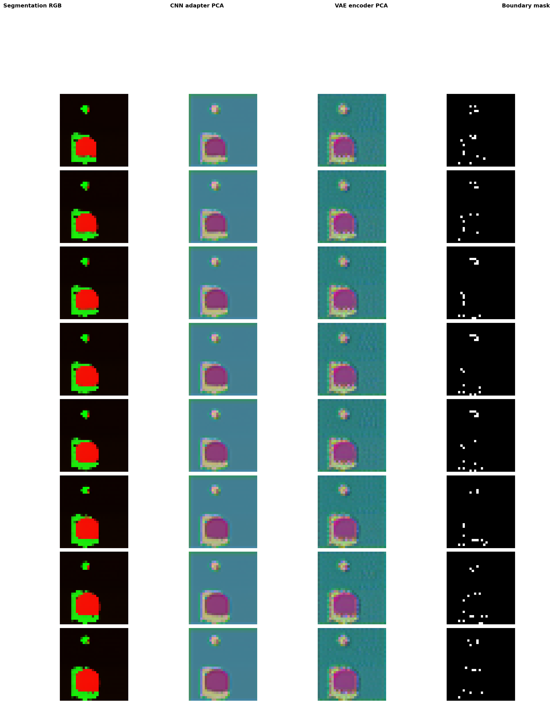
Appendix I
Dataset statistics
A large, contact-focused simulation corpus paired with a small real dataset.
The simulation corpus contains 13,950 episodes totalling 53.7 h at 5 fps across five objects (banana, cup, cylinder, dice, torus). Episodes are short and contact-focused (mean 13.9 s). The real dataset comprises 218 episodes totalling 2.5 h, with bimodal lengths: 198 short manipulation rollouts (0.71 h) and 20 long free-play sequences (1.80 h), predominantly red-cube grasping.
| Motion generator | Episodes |
|---|---|
| MimicGen, clean (no noise) | 5,000 |
| MimicGen, noisy (per-subtask sine noise) | 5,000 |
| Random-motion (exploratory) | 3,700 |
| Teleoperated demonstrations | 250 |
| Total | 13,950 |
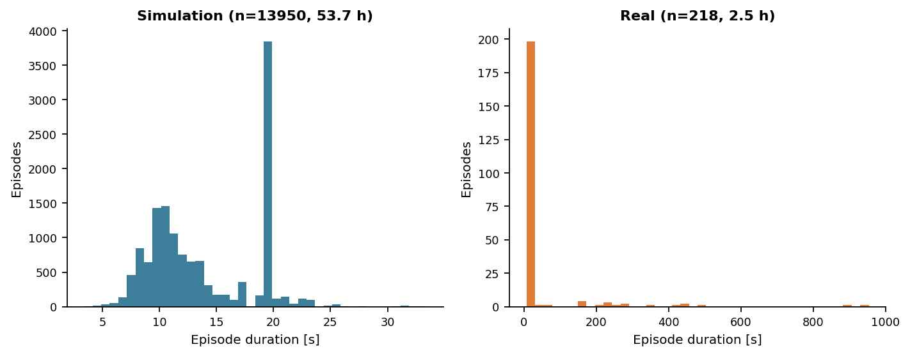
Appendix J
Implementation details
Real-world rig. A 7-DoF Franka Emika Panda arm with the 17-DoF ORCA hand (24 actuated joint DoF total: 7 arm + 17 hand; commanded through a 23-dimensional action space of a 6-D Cartesian end-effector pose and 17 hand-joint positions) inside a fixed arena, observed by a static third-person camera and a wrist-mounted camera (two Luxonis OAK-D RGB cameras). The setup figure is on the main page.
Simulation assets. Default Franka Panda URDF and the ORCA hand USD; the arena is reconstructed from physical measurements. No material, lighting or texture tuning is applied.
System identification. To reduce the kinematic gap between the simulated and physical ORCA hand, per-joint PD gains and friction coefficients are optimized with CMA-ES (following Bjelonic et al. 2025) to minimise tracking error under a chirp command. After calibration the simulated trajectory closely follows the measured one across the full frequency sweep, sufficient for the joint-angle-driven segmentation representation to stay accurate.
SAM 3 prompt engineering
For the third-person view, the prompts "hand" and the object name (e.g. "red cube") are used. For the wrist view, a short initialization clip is prepended in which the hand moves clearly into frame; the bounding box from this clip seeds SAM 3's tracker for the rest of the sequence.
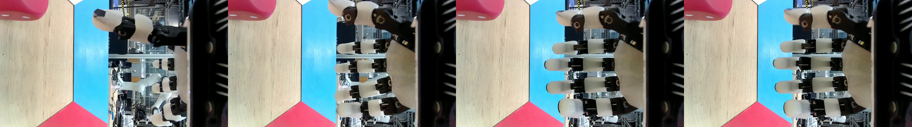
CNN mask encoder. Three convolutional blocks (Conv2d + GroupNorm + SiLU) with strided downsampling, a transposed convolution to restore resolution, and a final 1×1 convolution to match the ControlNet feature dimension. Operating on decoded pixel-space masks rather than VAE latents is key (see H).
Appendix K
Hyperparameters
| Hyperparameter | WM₁ | WM₂ |
|---|---|---|
| Training steps (sim) | 55,000 | n/a |
| Training steps (real / total) | 45,000 | 70,000 |
| Learning rate | 10⁻⁴ / 5×10⁻⁶ | 10⁻⁴ |
| LR scheduler | Cosine | Cosine |
| Warm-up steps | 3,000 / 500 | 3,000 |
| LR cycles | 0.5 | 0.5 |
| Batch size | 64 | 72 |
| GPU | 1× H200 | 8× H100 |
| Mixed precision | BF16 | FP16 |
| LoRA rank / α | 16 / 16 (real FT) | 16 / 16 |
| Cond. dropout (mask only) | 10% | 10% |
| Cond. dropout (action only) | 10% | 10% |
| Cond. dropout (both) | 5% | 5% |
Appendix L
Future work & policy rollouts in imagination
Scaling the data generator, conditioning on camera intrinsics/extrinsics, multi-object segmentation vocabularies, and distilling both stages into few-step samplers for near-real-time rollouts.
We roll out three policies trained on the real robot (a flow-matching policy, a diffusion policy, and an ACT policy, all trained on red-cube grasps and placements onto the red ramp) inside both Mask2Real-WM and the baseline world model. Using Mask2Real-WM as a policy evaluator (scoring candidate policies by their predicted outcomes in imagination) is a natural extension we leave to future work.
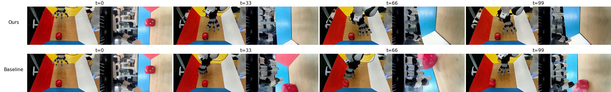
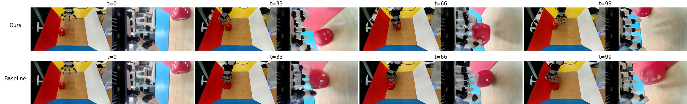
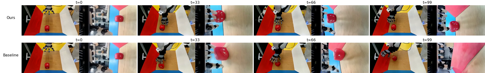
Each: 100-frame rollout (5 frames predicted per step), 4 frames shown ≈33 apart; both views, lower half generated.
← Back to the main pageAppendix M
Controllability and perceptual results of the earlier protocol
An earlier version of this work evaluated controllability with sinusoidal perturbations on in-distribution (ID) and out-of-distribution (OOD) splits and compared against a single real-only baseline.
In that evaluation, the three two-stage variants (WM₁ real only, sim only, and sim+real) are the counterparts of Cascade-R, Cascade-S, and Cascade-SR in the main paper, and the single-stage Ctrl-World baseline is the counterpart of the monolithic real-only model Mono-R. The training recipes differ in detail (the earlier baseline was trained for 70,000 steps, Mono-R uses 22k real-data updates), so the two evaluations are not directly comparable. The real training data is concentrated around grasping and free-play manipulation and contains only limited isolated single-finger motion. Simulation midtraining alone lifted controllability from ≈0.68 to 0.85 (ID) and from ≈0.51 to 0.73 (OOD); real fine-tuning then closed the remaining gap to 0.95 ID / 0.87 OOD, with the largest benefit on near-grasp OOD configurations, while the baseline reached ≈0.60 ID and fell below 0.5 on OOD. These numbers come from a different protocol than Table II of the main paper.
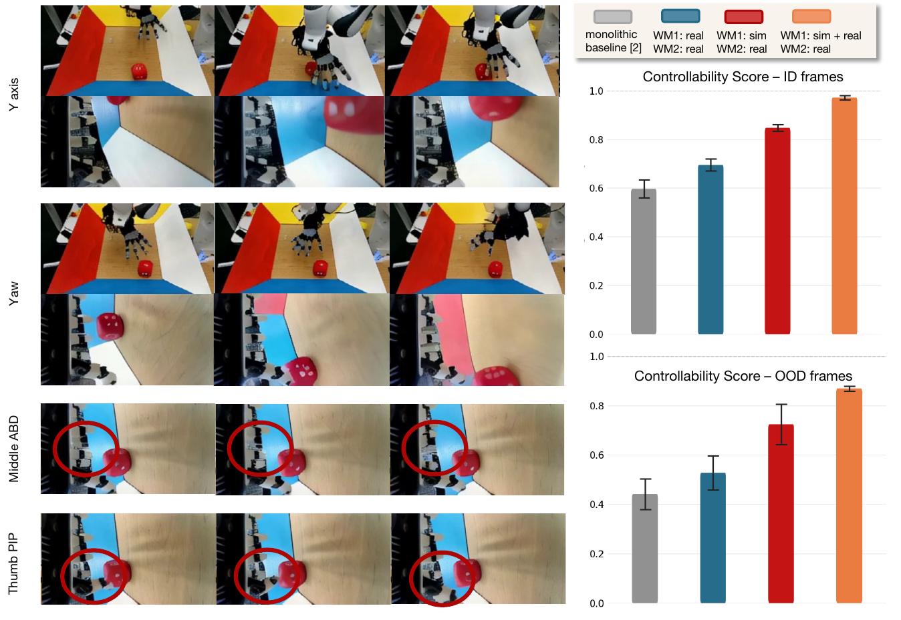
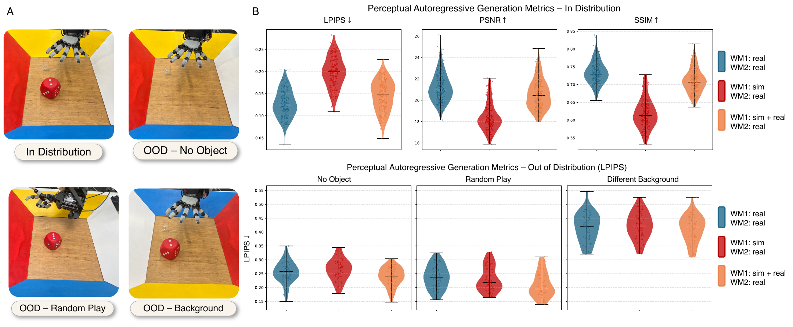
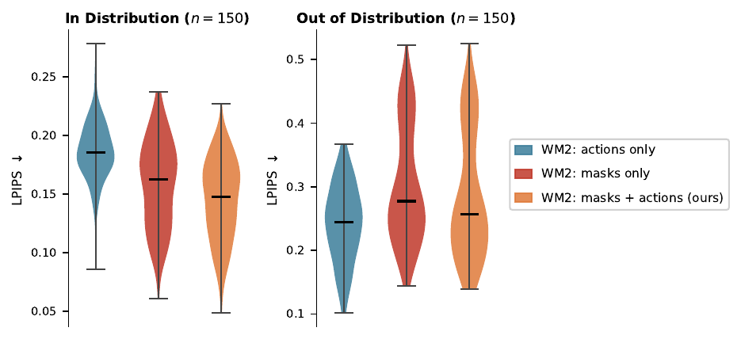
Appendix N
Autoregressive rollout, ours vs. monolithic
Autoregressive rollout on a pick-and-place sequence with the cup, comparing Mask2Real-WM against the monolithic baseline.
Mask2Real-WM (ours): sharp contacts, stable object identity
Monolithic baseline: blur and drift accumulate
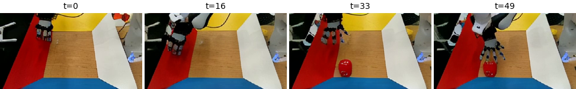
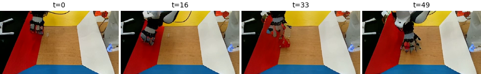
Appendix O
Behavior unfolding inside the world model
These examples visualize how long-horizon behavior unfolds as ACT, Diffusion Policy, and Flow Matching are rolled out inside Mask2Real-WM. Each video shows both the third-person and wrist-camera views: the upper half is the starting image for each view, and the lower half is the policy rollout. Side-by-side comparisons with the baseline are in Appendix L.
ACT · Sequence A
Diffusion Policy · Sequence A
Flow Matching · Sequence A
ACT · Sequence B
Diffusion Policy · Sequence B
Flow Matching · Sequence B
Appendix P
Limitations of the earlier version
All principal failure modes trace back to WM1. Without depth information, WM1 loses objects under hand occlusion. Over long horizons, the color-class mask carries no object-level identity, causing drift that text-prompt or object-ID conditioning could address.
Synthetic masks are perturbed only with a fixed Gaussian blur on rasterization edges — a coarse proxy for SAM 3's actual real-world error modes (boundary noise, occasional misclassification, temporal flicker); matching that error distribution more closely would likely narrow the sim-to-real gap further. WM1's diffusion backbone also denoises masks in pixel space; a JEPA-style architecture that predicts future states directly in a learned latent space, paired with a decoder trained to recover semantic masks from that latent, is an alternative we haven't explored.
WM2 is trained on real data from a single physical arena, so its rendering has not been evaluated in visually distinct scenes beyond the rotated-arena split. Its SVD-ControlNet backbone could also be replaced with a larger, more capable video foundation model such as Cosmos-Transfer, purpose-built for multimodal-conditioned world generation, at the cost of substantially more compute.
Because the baseline had no simulation exposure while WM1 is midtrained on over 50 h of synthetic data, that comparison cannot separate gains from the mask factorization from gains from simply seeing more data. The matched-recipe comparison of the main paper (Cascade-SR vs. Mono-SR) addresses this. Finally, two sequential diffusion passes are expensive; distilling both stages into consistency models is a promising route to near-real-time inference.